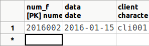
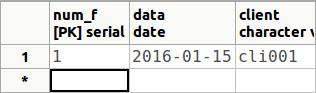

3.2.8.1 Seqüències
També es poden crear seqüències (SEQUENCE), que són objectes que agafen valors numèrics que van incrementant-se (com l'autonumèric).
CREATE SEQUENCE nom_seqüència
[START WITH valor_inicial]
[INCREMENTED BY valor_increment] ... ;
La sentència és més llarga, per a considerar més casos. Per a nosaltres està bé així.
Per defecte, el valor inicial és 1, i l'increment també 1.
És un objecte independent de les taules. S'utilitza de la següent manera:
CURRVAL ('nom_seqüència') torna el valor actual (ha d'estar inicialitzat)
NEXTVAL('nom_seqüència') incrementa la seqüència i torna el nou valor (excepte la primera vegada que l'inicia amb el valor inicial)
La manera habitual d'utilitzar-lo serà per obtenir un valor que s'afegirà a un camp d'una taula (normalment la clau principal).
Suposem que tenim una taula anomenada FACTURA amb l'estructura que ve a continuació, i volem que la clau principal siga un autonumèric. Ho podem provar sobre la Base de Dades i usuari proves.
( num_f NUMERIC(7) CONSTRAINT cp_fact PRIMARY KEY,
data DATE,
client VARCHAR(10));
Primer ens crearem la seqüència:
CREATE SEQUENCE s_num_fac START WITH 2016001;
Després l'utilitzem:
INSERT INTO FACTURA VALUES (NEXTVAL('s_num_fac'), '15-01-2016','cli001');
Si ara mirem el contingut de la taula FACTURA obtindrem:

O fins i tot en el moment de declarar la taula, li posem un valor per defecte al camp, que serà el següent de la seqüència. No haurem d'introduir ara res en la columna num_f, que agafa el valor de la seqüència
CREATE TABLE FACTURA2
( num_f NUMERIC(7) CONSTRAINT cp_fact2 PRIMARY KEY DEFAULT NEXTVAL('s_num_fac'),
data DATE,
client VARCHAR(10));
INSERT INTO FACTURA2(data,client) VALUES ('15-01-2016','cli001');
Observeu també que en la taula FACTURA2, el valor comença per 2016002, ja que el primer valor l'havíem utilitzat en FACTURA. Per tant el contingut de la taula FACTURA2 serà:
També ho podríem haver fet declarant la clau de tipus SERIAL, que el que fa és implementar una seqüència, i donar valors successius per al camp on està definida. Però d'aquesta manera la seqüència comença sempre per 1
CREATE TABLE FACTURA3
( num_f SERIAL CONSTRAINT cp_fact3 PRIMARY KEY,
data DATE,
client VARCHAR(10));
I després fer la inserció d'aquesta manera:
INSERT INTO FACTURA3(data,client) VALUES ('15-01-2016','cli001')
Com comentàvem, el valor introduït per la seqüència serà 1:

Tornarem a veure aquest exemple en les consultes d'actualització, concretament el INSERT.
Per a esborrar una seqüència utilitzarem la sentència DROP SEQUENCE:
DROP SEQUENCE s_num_fac
De moment aquesta sentència ens donaria error, ja que la taula FACTURA2 utilitza aquesta seqüència. Esborrarem primer les 3 taules, i després la seqüència per a no interferir amb els companys/es.
DROP TABLE FACTURA, FACTURA2, FACTURA3;
DROP SEQUENCE s_num_fac;
Llicenciat sota la Llicència Creative Commons Reconeixement NoComercial CompartirIgual 3.0